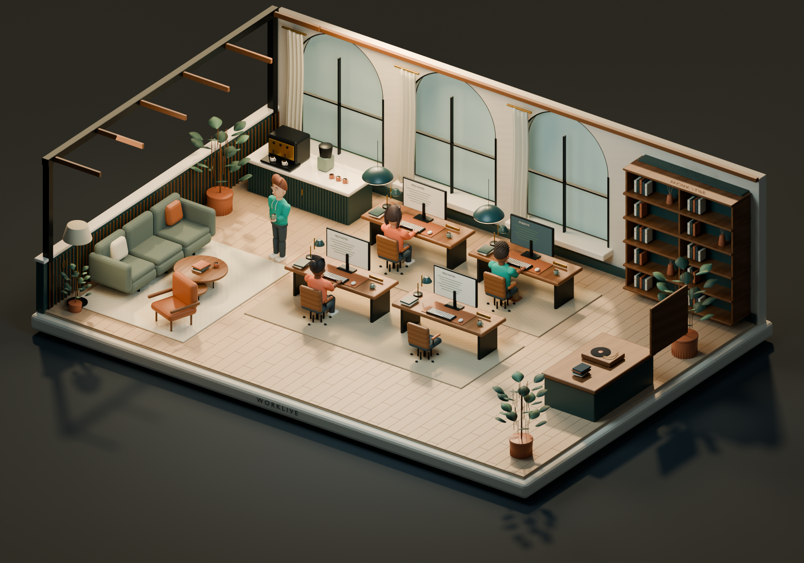

Four minds. One shared space.Come closer. There’s more to see.
The Loft uses original models authored in Blender, with tailored characters, detailed furnishings and richer surfaces. You can still explore the first, code-built Atelier alongside it.

Bringing the studio to life…